Wi-Fi
В квартире для вашего удобства установлен современный гигабитный интернет-центр
Keenetic Hopper DSL с Wi-Fi 6 AX1800.
Для доступа к интернету настроено две беспроводных
сети:
MyWonderfulWorld
Основная беспроводная сеть, к которой подключены устройства умного дома.
Пароль: MiMundoMaravilloso
Пароль: MiMundoMaravilloso
United WiFi Network
Дополнительная беспроводная сеть, предназначенная для социальных сетей. Обратите
внимание, что соединение в этой беспроводной сети может быть нестабильным, а некоторые сайты могут не
открываться. При возникновении проблем, подключитесь к основной беспроводной Wi-Fi сети.
Пароль: HelloSmartUsersAndDevices
Пароль: HelloSmartUsersAndDevices
К интернету подключились, поехали дальше!...
Умный дом
В квартире установлены умные устройства для вашего комфорта и безопасности
Умный дом с Алисой — перейдите на сайт
Яндекс.ДОМ чтобы скачать приложение для телефона
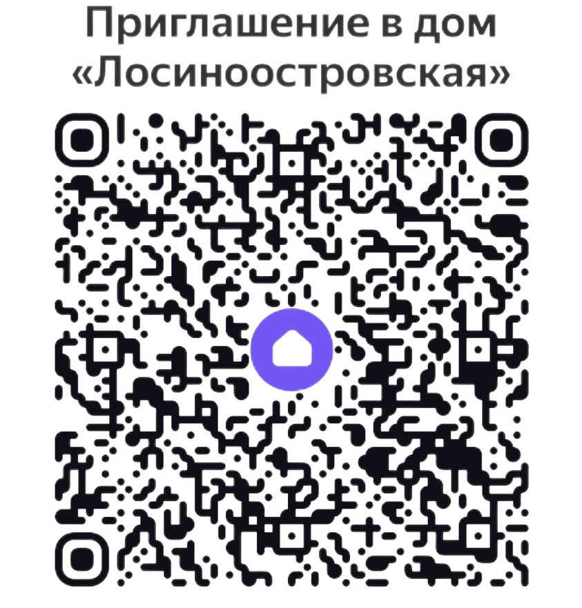
Актуальный код для подключения к дому вы можете запросить у владельца
Яндекс Станция
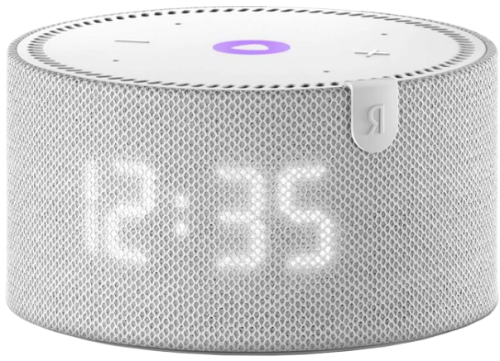
Умная колонка может включать свет, музыку, кондиционер. В режиме ожидания показывает
время.
При необходимости, вы можете отключить микрофон нажав клавишу на задней стороне колонки.
Сценарии умного дома
Алиса, включи свет - включается свет в основной комнате
студии
Алиса, включи основной свет - включается люстра в
студии
Алиса, включи свет на кухне - включается свет в зоне
кухни
Алиса, включи подсветку кровати - включается светодиодная подсветка над
кроватью
Алиса, включи кондиционер - включается
кондиционер
Алиса, установи температуру кондиционера на 22 градуса - зададутся
указанные настройки кондиционера
Алиса, я ухожу - выключается весь свет в
квартире, музыка
Zigbee Хаб умных устройств
Хаб необходим для работы умных устройств. Он обеспечивает связь выключателей,
контроллеров светодиодных лент, датчиков протечки, температуры и открытия двери с интернетом, а также
обеспечивает управление кондиционером без пульта.
Zigbee выключатели Aqara
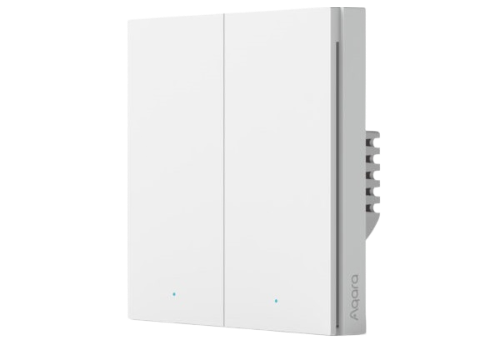
Основной свет в студии, в зоне кухни, в санузле и коридоре управляется умными
выключателями Aqara, работающими по технологии Zigbee.
Светодиодная подсветка
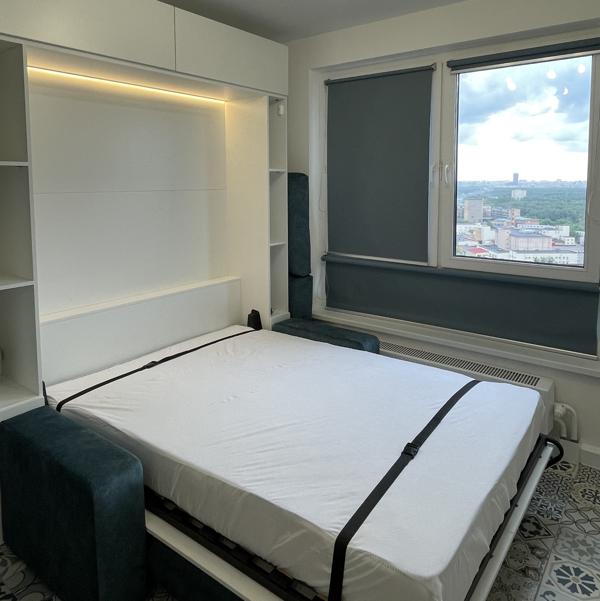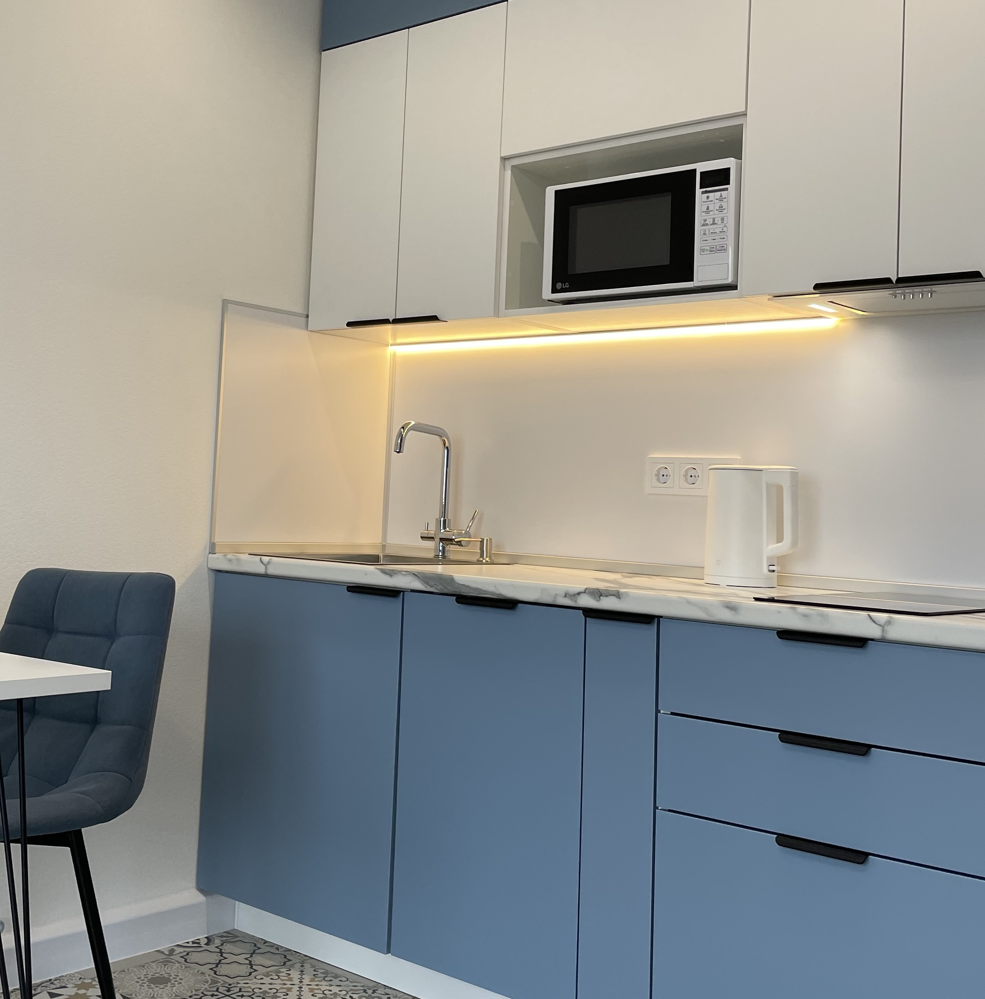
Зоны светодиодной подсветки кухни, прихожей и спального места управляются Zigbee
контроллерами светодиодной ленты.
В особых случаях вы можете физически отключить подсветку,
переведя положение переключателя в состояние 0.
Датчики протечки
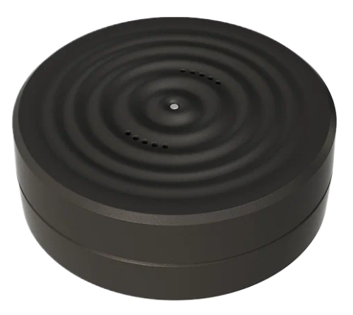
Датчики протечки Life Control MCLH-07 находятся на полу под кухонным гарнитуром (в
углу под трубами) и под душевым поддоном.
При обнаружении воды датчик подаёт звуковой сигнал,
отправляет Push уведомление на телефон и сообщает о протечке с помощью оповещения на Яндекс Станции.
Работает по технологии Zigbee.
Датчик работает от батарейки CR123A, которую необходимо заменять
около 1-го раза в год.
Датчик открытия двери
Датчик открытия двери приклеен в углу двери и позволяет вам следить за
безопасностью. Работает по технологии Zigbee.
Датчик работает от батарейки CR1632, которую
необходимо заменять около 1-го раза в 2 года.
Датчик температуры и влажности
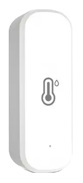
Датчик температуры и влажности расположен над спальным местом. С его помощью вы можете
контролировать условия в квартире и принимать решение о необходимости включить кондиционирование
воздуха.
Датчик работает от двух батареек ААА, которые необходимо заменять около 1-го раза в год.
Работает по технологии Zigbee.
Коммуникации
Ключ для доступа к коммуникациям хранится в шкафу в прихожей
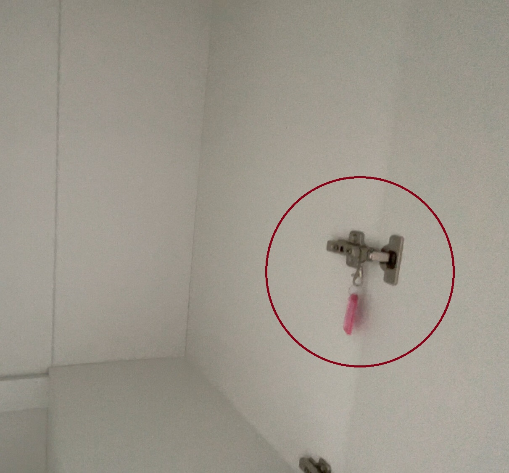
Пожалуйста, не выносите ключ из квартиры. Это универсальный ключ, для доступа ко всем
коммуникациям на этаже. В квартире он в единственном экземпляре.
Счётчики воды, отопления. Краны перекрытия водоснабжения
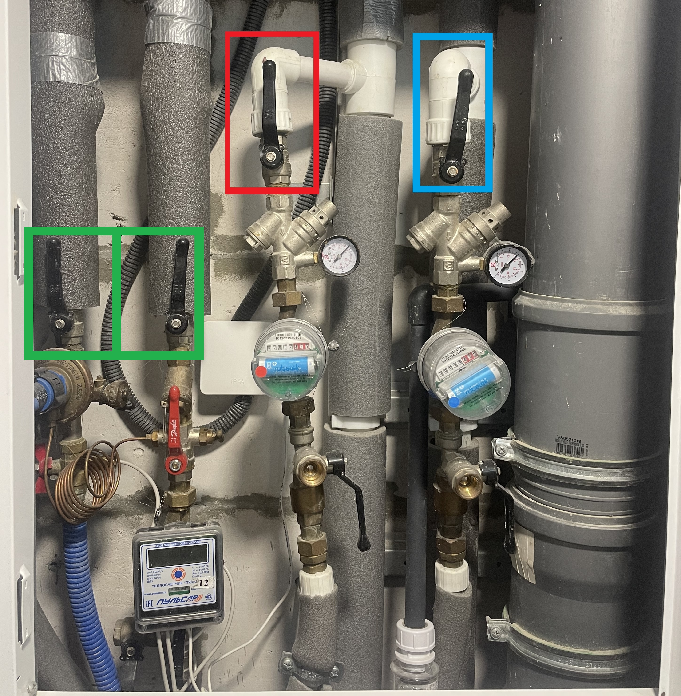
Счётчики воды и отопления находятся за верхней металлической дверцей щитка, справа от
двери в квартиру (если смотреть на дверь лицом). На щитке показан номер квартиры.
Краны перекрытия
горячей и холодной воды отмечены красной и синей рамкой.
Краны перекрытия отопления выделены
зеленой рамкой.
Счётчик электричества. Автомат ввода
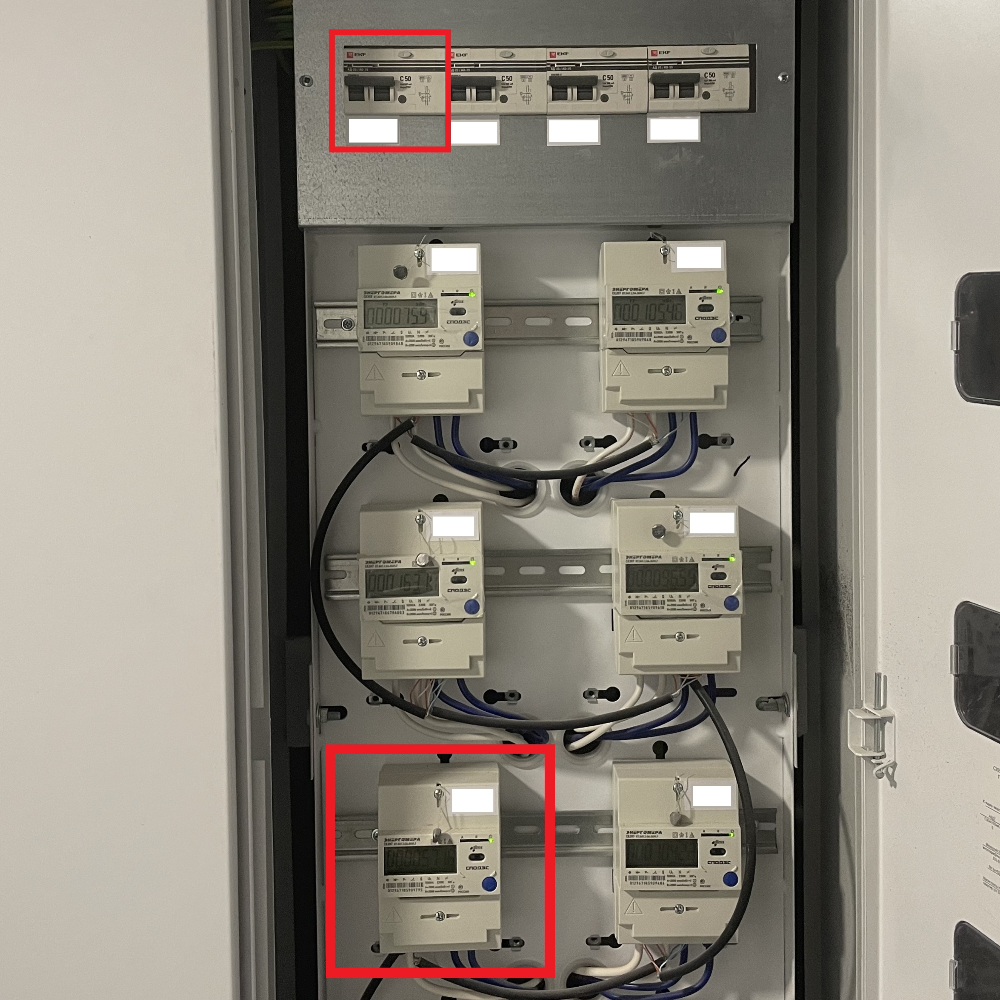
Счётчик электричества находится в квартирном холле. Дифференциальный защитный автомат
находится над счётчиками.
Особенности квартиры
Вертикальная шкаф-кровать с диваном
Для обеспечения комфортного сна мы установили удобную кровать-трансформер, которая
убирается в шкаф и позволяет расслабится на удобном диване.
Для того чтобы разложить кровать,
необходимо:
1. Убрать подушки дивана
2. Сложить диван
3. Потянуть кровать за
ручки
4. Во время опускания кровати выдвинуть опору кровати
5. Плавно опустить кровать,
разложить спальное одеяло и подушки.
Стиральная машина Candy Smart Pro CSO34 106TB1/2-07
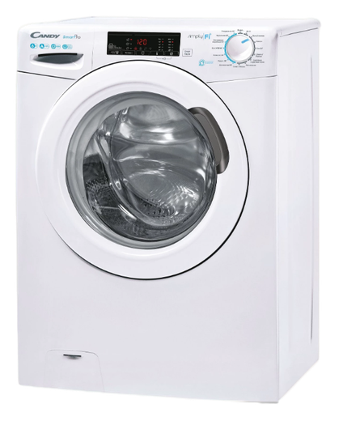
Загрузка стиральной машины - 6 килограмм, это максимальный вес сухого белья, который
стиральная машина постирает без потери качества. Просим не заполнять барабан стиральной машины
полностью, так машинка будет стирать качественнее.
Инструкция к стиральной машине Candy Smart Pro CSO34 106TB1
Сплит-система Tesla TARIEL Inverter TT26EXC1-0932IA
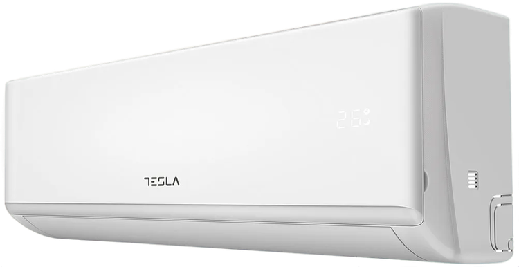
Инверторный кондиционер поддерживает заданную температуру регулируя мощность внешнего
блока, что создаёт более комфортную температуру, не переохлаждая воздух во время работы. Однако, такой
блок не рассчитан на постоянные включения/отключения, поэтому просим не менять режимы и не производить
включения/отключения кондиционера очень часто.
Инструкция к
сплит-системе Tesla TARIEL Inverter TT26EXC1-0932IA
Посудомоечная машина Leran BDW 45-104
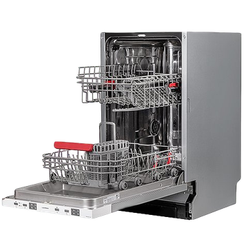
Для качественного мытья рекомендуется использовать таблетку для мытья посуды и
ополаскивающее средство.
Обращайте внимание на индикатор соли, недостаточное количество соли в
посудомоечной машине, приведёт к её повреждению.
Инструкция к
посудомоечной машине Leran BDW 45-104
Электрический чайник Xiaomi Mijia Electric Kettle 2
При пользовании чайником обращайте внимание на образование накипи. При большом
скоплении накопи - замените водоочистительный картридж фильтра Аквафор К5.
Водоочиститель Аквафор "Кристалл А" для жёсткой воды
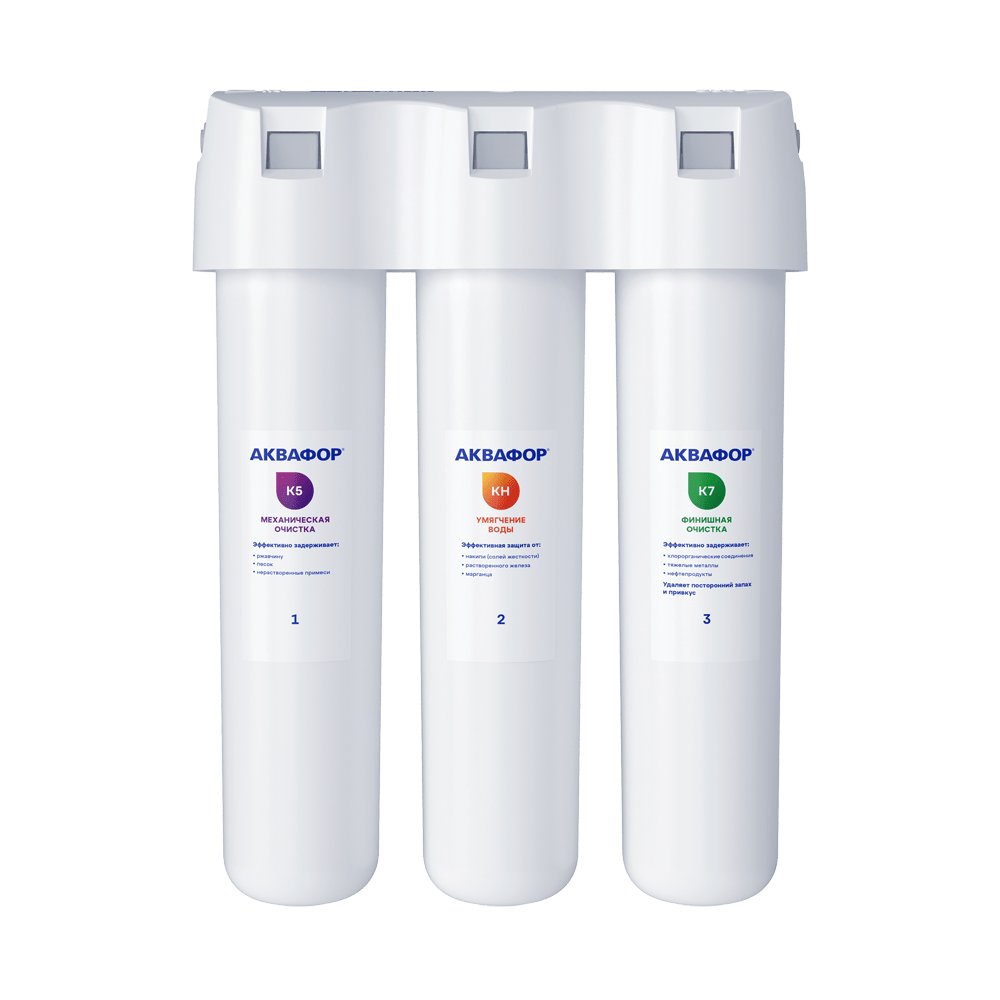
При необходимости, вы можете перезаправить картридж фильтра Аквафор К5 с помощью
специального комплекта, однако перезаправленный картридж не даёт такого же качества очищенной воды, как
новый.
Инструкция к водоочистителю Аквафор "Кристалл А"